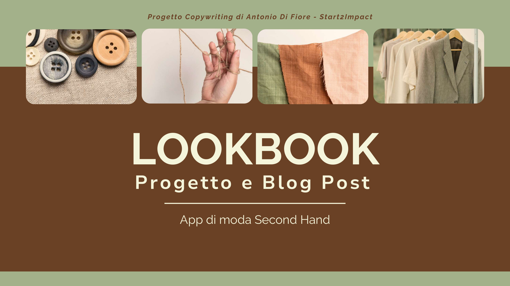
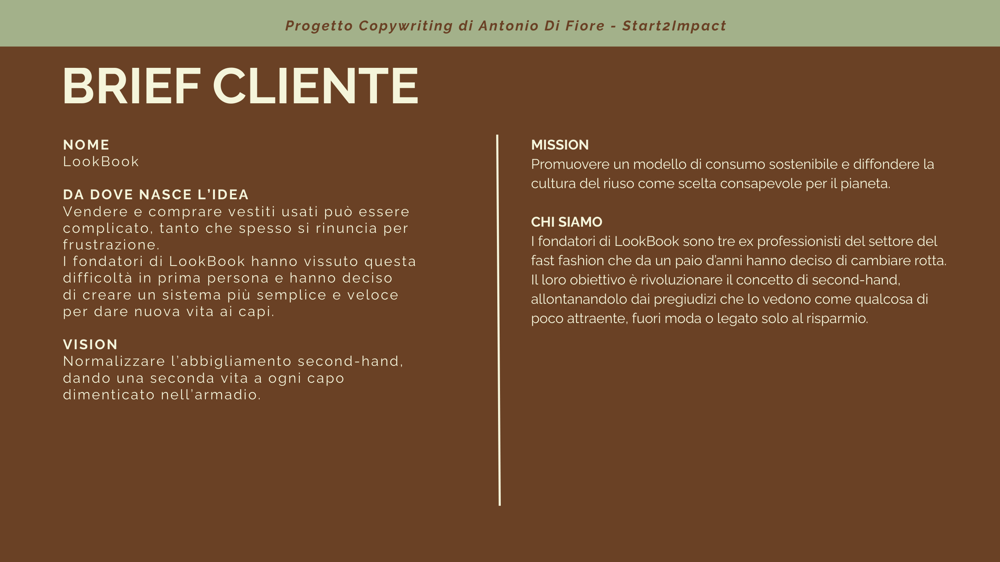
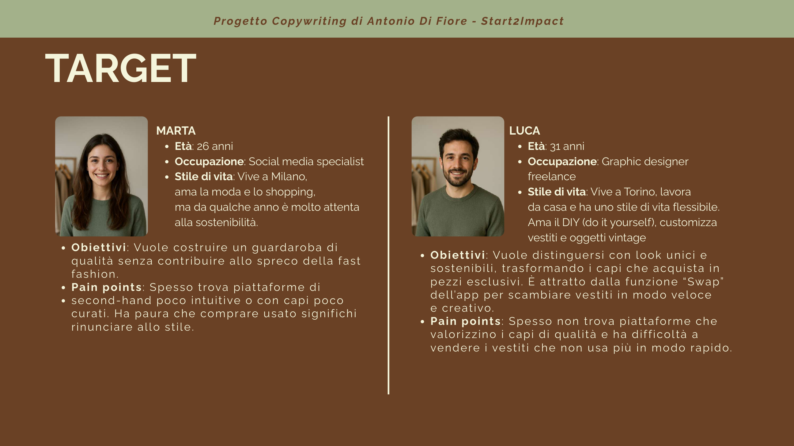
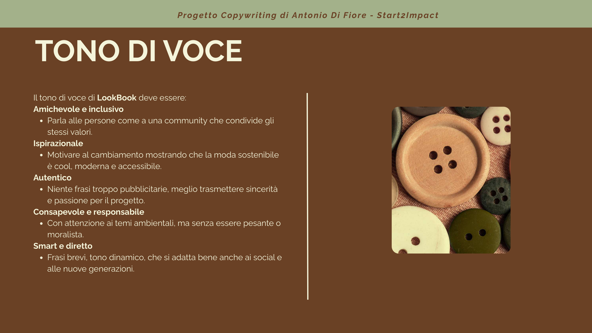
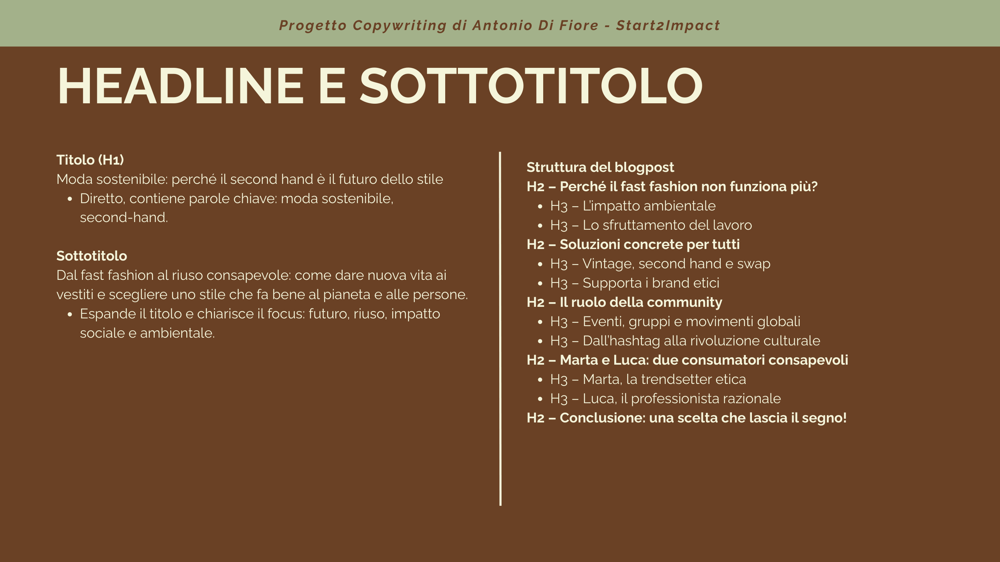
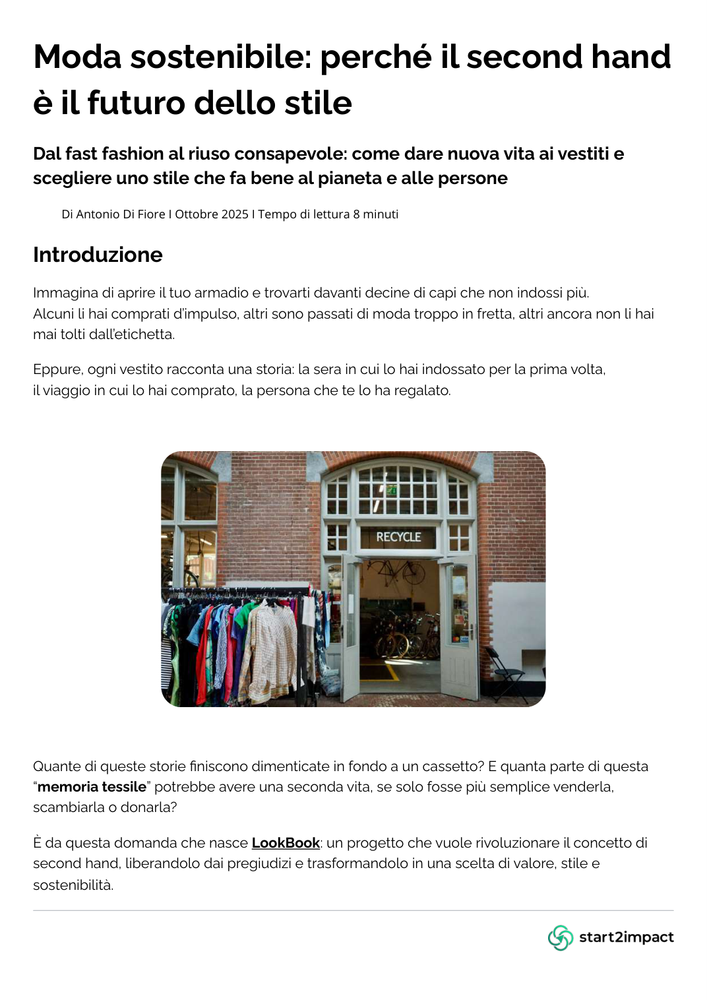
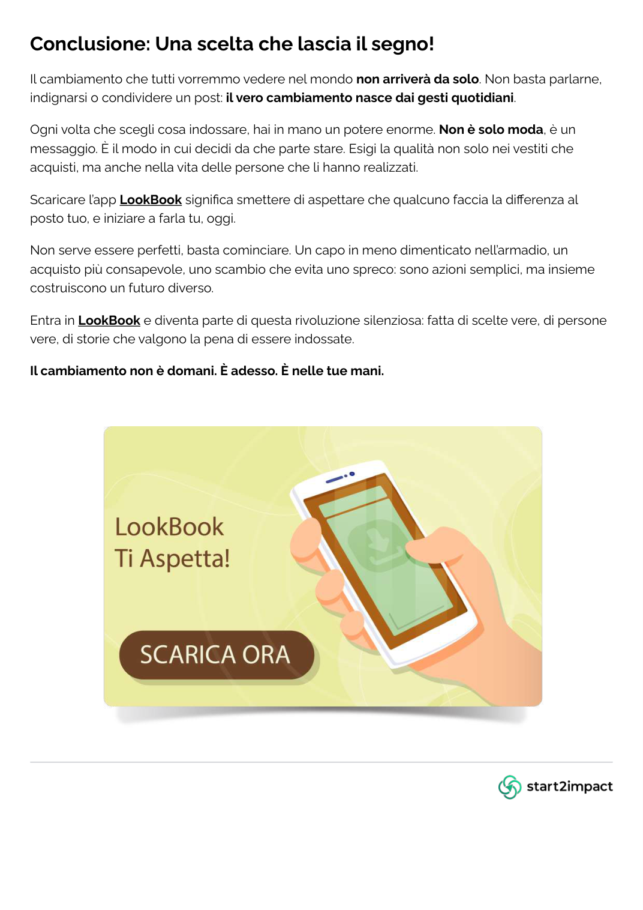

02 — Copywriting / Editorial storytelling
LookBook.
Making second-hand fashion feel like a conscious, contemporary and personal choice through words.

01 / The brief
Give clothes a second story.
LookBook is a second-hand fashion app concept designed to make buying, selling and exchanging pre-loved clothes simpler. The brief positions reuse not as a compromise, but as a way to express personal style while reducing waste.
Users can list clothes, receive a suggested average selling price, propose swaps and explore donation options through partner non-profits.

02 / The challenge
Change the conversation around second-hand.
Second-hand fashion can still be associated with inconvenience, outdated clothing or buying only to save money. The communication challenge was to present it as stylish, accessible and meaningful — without sounding judgmental or overly promotional.
The goal was not simply to sell an app, but to offer readers useful tools for making more conscious choices.

03 / Audience
Two people. Different styles. Shared values.
The primary audience consists of digitally confident adults aged 20–35, interested in style, affordability and responsible consumption.
Marta, 26: a social media specialist looking for a curated, stylish alternative to fast fashion.
Luca, 31: a freelance graphic designer who loves vintage pieces and is interested in swapping and customisation.
04 / Voice & persuasion
A voice that invites, not lectures.
I defined a voice that feels friendly, inclusive, inspirational, authentic and direct. Sustainability is communicated as an opportunity rather than a source of guilt.
The persuasion strategy combines social proof, belonging, reciprocity and credible references to encourage small, concrete actions.


05 / Content strategy
From search intent to storytelling.
The blog structure begins with the impact of fast fashion, moves into practical alternatives and the role of community, then introduces relatable audience stories before closing with a call to action.
Headlines were planned for clarity, scanning and search relevance, using keywords related to sustainable fashion, second-hand and conscious consumption.
06 / Final deliverable
An editorial article with a purpose.
Original title: “Moda sostenibile: perché il second hand è il futuro dello stile”.
The final Italian-language blog article explores the environmental and social costs of fast fashion, second-hand and swap alternatives, the importance of community and the experiences of Marta and Luca. It ends by inviting readers to take a practical first step.
The article is presented in its original language to preserve the writing itself, rather than replacing it with a translation.
READ THE FULL ARTICLE / PDF

07 / What the project demonstrates
Writing with intention.
Audience-first
Understanding readers' motivations, barriers and values before writing.
Clear structure
Organising a long-form article through meaningful headings and a narrative flow.
Purposeful voice
Combining accessible language, emotional relevance and a concrete call to action.